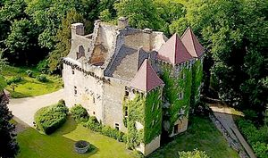
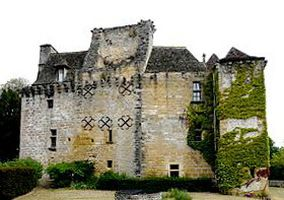
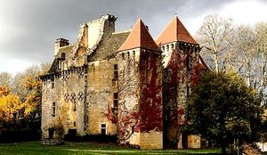
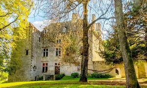
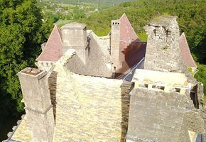
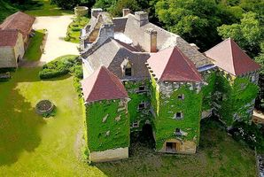
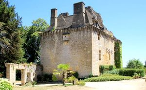
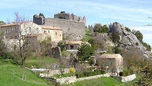

Recensement Jean-Claude Truffet
| Département | 24 — Dordogne |
| Canton | Montignac |
| Commune | Auriac du pérrigord |
| Type d'édifice | Château |
| Période d'origine | XIII-XIV |








FAYE Bertrand Arnal, abbé de l'abbaye de Terrasson entre 1520 et 1541, date à laquelle il se démet en faveur de son neveu, Pierre. Marguerite, mariée avec Jean Alphern, Foucauld né en 1476, François, né vers 1485, mort avant 1551, marié en 1520 à Souveraine d'Aubusson de Villac a eu six enfants : Pierre Arnal, succède à son oncle comme abbé de Terrasson en 1541, mort après 1551, Antoinette mariée à Guillaume Migot, Gabrielle Arnal mariée en 1539 avec Bernard IV de Foucauld de Lardimalie, Marguerite Arnal mariée en 1547 à Hélie Cottet, Amanieu Arnal, né en 1533, mort en 1556, marié à Marguerite Catherine Belcier, Guilhane Arnal mariée en 1551 à François Saulnier de Laborie. Amanieu Arnal a eu deux enfants : Pierre Arnal, né vers 1555 et mort avant 1591, marié avec Marguerite de Cugnac, et Catherine Arnal mariée le 13 janvier 1574 avec Jean Pasquet de Savignac, décédée en 1608. En 1580, on trouve Antoine de la Faye, seigneur de La Faye et d'Auriac, capitaine de la ville jusqu'en 1581, Catherine Arnal de la Faye, fille d'Antoine Arnal de la Faye, seigneur de la Faye et de Puygolfier, et de Suzanne de Pérusse-d'Escars, s'est mariée avec François Foucauld. Son fils, Henri Foucauld, seigneur de la Faye d'Auriac, s'est marié en 1673 avec Gabrielle de Rouffignac. Il est seigneur d'Auriac et de la Faye. Sa fille aînée, Anne Foucauld est dame de la Faye et son héritière universelle. Elle se marie par contrat du 25 juin 1718 avec Louis Foucauld de Pontbriand, seigneur de Mesmond. Anne de Foucauld est morte sans postérité en 1752 après avoir testé en faveur de son mari. Celui-ci institue en 1753 pour héritier universel son petit neveu, le comte Louis de Foucauld de Pontbriand, né en 1742. Il a émigré en 1791 vendu comme bien national, l'acquereur Pierre Labrousse l'aubergiste d'Auriac , le domaine passe par alliance au notaire de Montignac Jérome Barbesson, en 1845 à sa mort le domaine passe dans diverses mains avant de revenir par hérirage à la famille Monégier du Sorbier qui fait rajouter une tour à l'angle sud-Est, toujours dans la famille des Sorbier.
FAYE, manoir du XVe siècle avec donjon ruiné. D'abord, sur le site est un cluzeau, qui est visité depuis des siècles. Au sud, la construction du centre est à la base d'un donjon carré médiéval, presque aveugle. Véritable tour de guet permettant d'assurer une protection à Montignac. De part et d'autre de ce bâtiment, sont accolées deux puissantes tours carrées, celle de gauche datant de 1359, celle de droite du XVe siècle. Les fortifications, dont il ne reste que les corbeaux et qui devaient couronner le château, ont cédé leur place à de hautes toitures de lauzes éclairées par deux lucarnes. Un logis barlong sera flanqué de tours modernes aux extrémités au XIXe siècle. En son millieu se trouve une tour bâtie au XVIe siècle, dont la porte, soulignée d'un arc brisé, s'ouvre sur l'escalier. Autour de la cour intérieure est construit un logis appelé les galleries. Un inventaire établi au XVIIIe siècle, note l'utilisation de huit cheminées dans les pièces du château. Jusqu'à la période révolutionnaire. Chaque union de familles apporte sa construction et chaque époque, son style. Une clé de voûte porte les armes des Amal de la Faye, une des familles qui demeura le plus longtemps à La Faye. Lédifice est à lorigine dédié à Saint-Barthélemy, que lon prie pourguérir les boiteux et les mal-formés. En latin, guérir se dit remedio. Le nom de la chapelle a donc évolué en San-Rémédi, saint guérisseur, qui adonné Saint-Rémi. La chapelle est inscrite à linventaire des M.H. depuis 1848.
Famille Arnal de la Faye
"
Château de la Fayes à Auriac